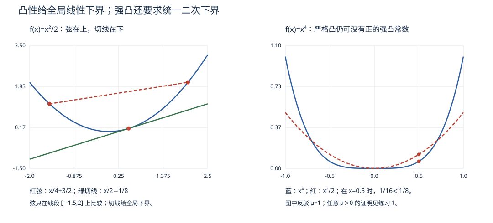

优化 I · 凸分析基础
优化理论的第一课不是算法而是几何：什么样的问题天生"好解"？答案是凸问题——局部最优即全局最优、对偶间隙为零、算法有收敛保证。凸与非凸是优化世界的"可靠/探险"分界线，深度学习属于后者，但它的一切算法语言仍是在凸世界里锻造的。
1. 凸集
定义 \(C\) 凸 \(\iff \forall x, y \in C,\ \lambda \in [0,1]:\ \lambda x + (1-\lambda)y \in C\)（任两点连线段不出集合）。
基本例子：超平面 \(\{a^\top x = b\}\) 与半空间 \(\{a^\top x \leq b\}\)；球；多面体（有限个半空间之交——线性规划的可行域，优化 IV）；半正定矩阵锥（高代 VI 的半正定判据给出的集合）。
保凸运算：任意多个凸集的交仍凸（并一般不凸）；仿射映射的像与原像。
两条支撑性定理（凸几何的灵魂，陈述级掌握）：分离超平面定理——两个不相交凸集可用超平面分开；支撑超平面定理——凸集边界点处存在"托住"整个集合的超平面。（🔗 SVM 最大间隔分类的几何合法性、对偶理论的几何来源都在这两条上。）
2. 凸函数

定义 \(f\) 凸 \(\iff\) 定义域凸且 \(f(\lambda x + (1-\lambda)y) \leq \lambda f(x) + (1-\lambda)f(y)\)（弦在图像上方）。严格凸：不等号严格；\(\mu\)-强凸：\(f - \frac{\mu}{2}\|x\|^2\) 仍凸（碗至少弯到二次程度——收敛速率的关键参数，优化 II）。
三级判据（可微性逐级增强）：
| 条件 | 判据 |
|---|---|
| 零阶（定义） | 弦在上方 |
| 一阶（可微） | \(f(y) \geq f(x) + \nabla f(x)^\top (y - x)\)——切平面全局在下方 |
| 二阶（二阶可微） | Hessian \(\nabla^2 f(x) \succeq 0\) 处处半正定（高代 VI 判据上岗） |
一阶条件是三者中最常被引用的：它说凸函数的局部线性信息（梯度）携带全局下界——这就是为什么梯度方法在凸世界有全局保证。
常见凸函数清单：仿射（唯一既凸又凹）、\(e^{ax}\)、\(-\ln x\)、范数、\(\max(x_1,\dots,x_n)\)、log-sum-exp \(\ln\sum e^{x_i}\)（softmax 的势函数——🔗 交叉熵损失凸性的来源）、二次型 \(x^\top A x\)（\(A \succeq 0\) 时）。
保凸运算：非负加权和；与仿射复合 \(f(Ax + b)\)；逐点上确界 \(\sup_\alpha f_\alpha(x)\)（凸函数族的包络仍凸——对偶函数凹性的来源，优化 III）；复合规则（外凸内仿射，或外凸不减内凸）。
Jensen 不等式：\(f\) 凸 ⇒ \(f(E X) \leq E[f(X)]\)（概率 IV 的版本；定义的期望化）。
3. 凸优化问题
定义 \(\min f(x)\) s.t. \(g_i(x) \leq 0,\ Ax = b\)，其中 \(f, g_i\) 凸（等式约束必须仿射——否则可行域不凸）。
定理（局部即全局） 凸问题的任何局部极小点都是全局极小点。 证明（三行，值得记住）：设 \(x^*\) 局部极小而 \(y\) 更优（\(f(y) < f(x^*)\)）。沿线段 \(z_\lambda = (1-\lambda)x^* + \lambda y\)，凸性给 \(f(z_\lambda) \leq (1-\lambda)f(x^*) + \lambda f(y) < f(x^*)\) 对一切 \(\lambda \in (0,1]\) 成立——\(x^*\) 的任意小邻域内都有更优点，与局部极小矛盾。\(\blacksquare\)
（可微凸函数的更强结论：\(\nabla f(x^*) = 0 \iff\) 全局最优——驻点条件从"必要"升格为"充要"。）
4. 次梯度：不可微时怎么办
凸函数可以有折点（\(|x|\)、hinge 损失、ReLU 复合）。次梯度 \(g\) 定义为满足一阶条件的向量：
全体次梯度构成次微分 \(\partial f(x)\)（非空凸集；可微点处退化为 \(\{\nabla f\}\)）。例：\(f = |x|\) 在 0 处 \(\partial f(0) = [-1, 1]\)。最优性条件推广为 \(0 \in \partial f(x^*)\)。
🔗 AI 衔接：hinge 损失（ai 课 02 讲 SVM）、L1 正则（Lasso 的稀疏性恰来自 \(\partial|x|(0)\) 是一个区间——零点是"一段"最优而非"一点"）、ReLU 网络的"梯度"严格说都是次梯度——框架里 relu'(0)=0 是从次微分 \([0,1]\) 里挑了一个。
5. 典型例题
例 1（二阶判据） 判断 \(f(x, y) = x^2 + xy + y^2 - \ln(xy)\) 在 \(x, y > 0\) 上的凸性。 解：Hessian \(= \begin{pmatrix} 2 + \frac{1}{x^2} & 1 \\ 1 & 2 + \frac{1}{y^2} \end{pmatrix}\)，顺序主子式 \(> 0\)（对角 \(> 2\)、行列式 \(> 4 - 1 > 0\)）——正定，故（严格）凸。
例 2（逐点上确界） 证明矩阵最大特征值 \(\lambda_{\max}(A)\) 是对称矩阵空间上的凸函数。 解：Rayleigh 商表示 \(\lambda_{\max}(A) = \sup_{\|v\|=1} v^\top A v\)——对每个固定 \(v\)，\(A \mapsto v^\top A v\) 是线性（凸）函数，逐点 sup 保凸。\(\blacksquare\)（一行用掉两个工具；这类"变分表示 + 保凸运算"是凸性证明的高级套路。）
例 3（一阶条件应用） \(f\) 凸可微，证明 \(\nabla f(x^*) = 0 \Rightarrow x^*\) 全局最优。 解：一阶条件 \(f(y) \geq f(x^*) + \nabla f(x^*)^\top(y - x^*) = f(x^*)\) 对一切 \(y\)。完。——凸世界里"梯度为零"就是终点线。
下一页：在凸的地基上跑算法——梯度下降到底多快、为什么条件数决定一切、Newton 法凭什么二次收敛。